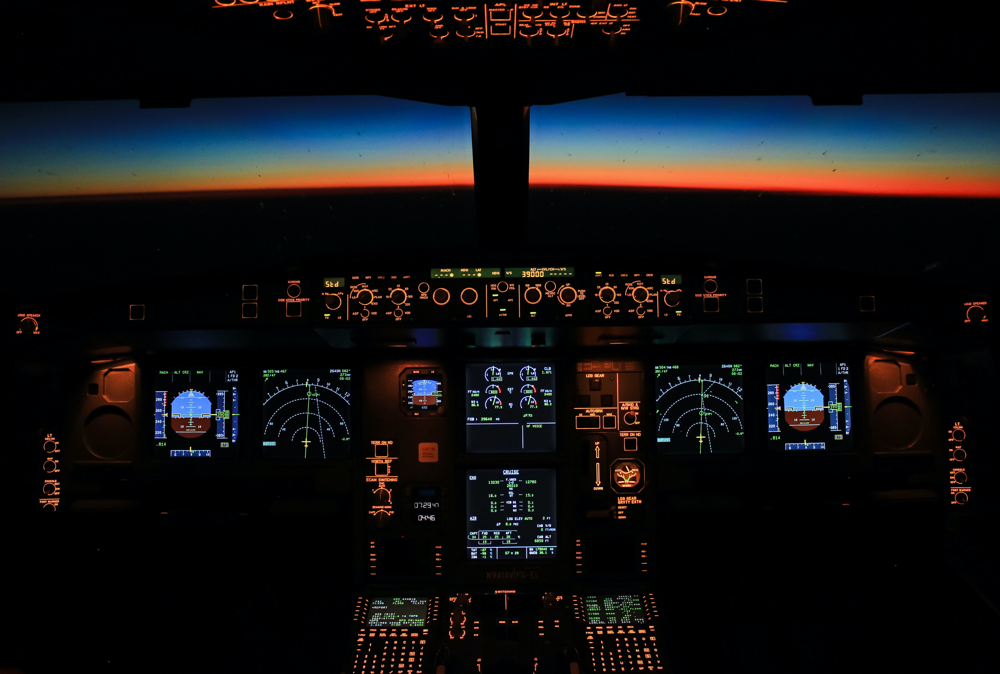

AVIONICS SYSTEM

The space shuttle avionics system controls, or assists in controlling, most of the shuttle systems. Its functions include automatic determination of the vehicle's status and operational readiness; implementation sequencing and control for the solid rocket boosters and external tank during launch and ascent; performance monitoring; digital data processing; communications and tracking; payload and system management; guidance, navigation and control; and electrical power distribution for the orbiter, external tank and solid rocket boosters. Automatic vehicle flight control can be used for every phase of the mission except docking, which is a manual operation performed by the flight crew. Manual control-referred to as the control stick steering mode-also is available at all times as a flight crew option. The avionics equipment is arranged to facilitate checkout, access and replacement with minimal disturbance to other systems. Almost all electrical and electronic equipment is installed in three areas of the orbiter: the flight deck, the three avionics equipment bays in the middeck of the orbiter crew compartment and the three avionics equipment bays in the orbiter aft fuselage. The flight deck of the orbiter crew compartment is the center of avionics activity, both in flight and on the ground. Before launch, the orbiter avionics system is linked to ground support equipment through umbilical connections. The space shuttle avionics system consists of more than 300 major electronic black boxes located throughout the vehicle, connected by more than 300 miles of electrical wiring. There are approximately 120,400 wire segments and 6,491 connectors in the vehicle. The wiring and connectors weigh approximately 7,000 pounds, wiring alone weighing approximately 4,600 pounds. Total weight of the black boxes, wiring and connectors is approximately 17,116 pounds. The black boxes are connected to a set of five general-purpose computers through common party lines called data buses. The black boxes offer dual or triple redundancy for every function. The avionics are designed to withstand multiple failures through redundant hardware and software (computer programs) managed by the complex of five computers; this arrangement is called a fail-operational/fail-safe capability. Fail-operational performance means that, after one failure in a system, redundancy management allows the vehicle to continue on its mission. Fail-safe means that after a second failure, the vehicle still is capable of returning to a landing site safely.